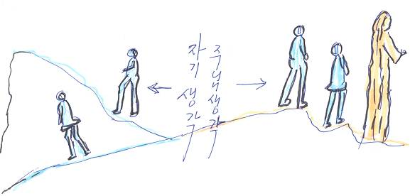
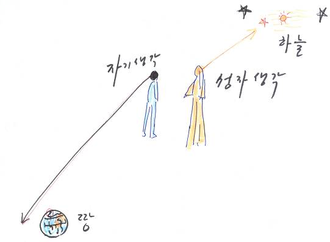
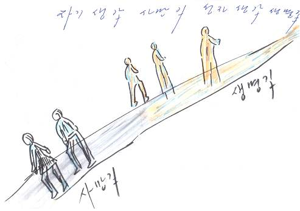
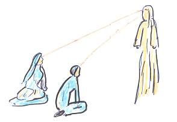
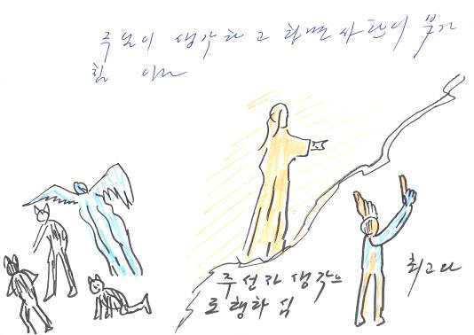
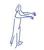
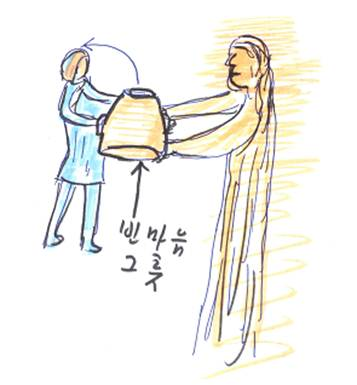
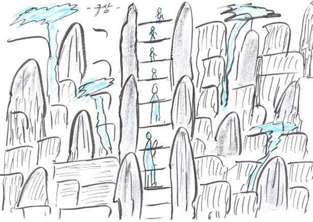
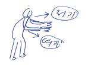

＜2012年10月21日主日話語＞重要話語
由自己來思考就會走上自己的路
由聖子主來思考才會走上主的路
本文：以賽亞書55章6-9節
啟示錄22章10-13節
* 司會先不要說出今天話語的主題。
證道開始後，再由證道者配合證道內容來說出主題。
哈利路亞！願各位有永恆聖父 神的愛以及聖子耶穌的平安。也祝福各位今天聆聽主的話語時，能充滿聖靈炙熱的感動、感化與動工。
如果想要好好體會和理解今天的話語，就首先要仔細聆聽聖子主所啟示的一句話，並將這句話刻在心版上。聽了這一句話之後，就能夠好好體會和瞭解今天的話語。
9月24日的清晨，我先針對各個部分來禱告，接著再針對主日話語來禱告。那時聖子主賜下了答案，不過主只說了一句話。今天我會把那句話傳達給大家，請大家一起跟著唸，並且一次就要把那句話刻在心版上。阿們！
（* 聖子主所說的那句話是什麼呢？大家看著畫面一起大聲地唸出來，並且把它刻在心版上。）＜影片1＞
由自己來思考就會走上自己的路
長年部、家庭局、青年部、大學部和國高中部，請各部門推派一個人來到前面吧！（事先安排好要出來的人。）請各自按照這句話比出最帥氣的肢體動作。
之後聖子主又說了一句話。（* 大家透過畫面來看看那句話是什麼，然後再一起大聲地唸出來。）＜影片2＞
由聖子主來思考才會走上主的路
「由自己來思考就會走上自己的路，由聖子主來思考則會走上主的路。」→請把這句話時時刻在心版上，並當成座右銘來生活。
今天的話語要開始了。
（* 我們來看畫面。）＜影片3＞
由自己來思考就會走上自己的路，由聖子主來思考則會走上主的路。必須要把自己的內心交給主，讓主進入自己的心中，如此由主來思考才行。這樣才能夠走上主的路。
老師的插畫_影片_3_1
|  |
自己的想法和聖子主的想法，有著天壤之別。
老師的插畫_影片_3_2

自己的想法是死亡之路，聖子主的想法則是永生之路、成功之路、願望實現之路。
老師的插畫_影片_3_3

若不想按照自己的想法去做，就應該要先呼喊主並禱告來詢問主。要說：「我會把內心交託給主。」「我會按照主的想法去做！」自己要如此允許自己才可以。
老師的插畫_影片_3_4

按照主的想法去做時，「撒但無法侵犯」。撒但也會無法動工。如果真正合宜地交託給主了，主的想法就會來到，甚至主會視情況來幫忙那件事。如果按照主的想法去做，一切的事情都會順利而變成最理想的狀態。＜影片3結束＞
老師的插畫_影片_3_5

如果按照主的想法去做，有時候主會把那件事交給合乎主心意的人去做，有時候則會完全不讓人去做，卻讓事情變得更順利。全知全能的聖子完全瞭解世上萬事，你們想想看，祂會有多麼瞭解一切而妥善地動工呢？是因為沒有交託給聖子主才會承受痛苦，沒有人是因為交託而承受痛苦的。
按照主的想法去做而走上主道路的人，會走向「天國」；按照自己想法去做而走上自己道路的人，則會走向「地獄」。主說：「把你們的路交託給我吧！這麼一來我會告訴你們的。」
相愛的男女之間也是一樣，若是真心相愛就會倒空內心，然後把自己內心的器皿交給心愛的人，不會有自己的想法，而是會按照愛人的想法去做。相信時就會交託；想跟對方一起吃喝、一起生活時就會交託；真心相愛時就會交託，也會按照愛人的想法來生活。
有一次，我針對某件事把想法交給聖子主，我倒空內心、沒有按照我的想法去做。那時，我一邊做主的事工，一邊觀察主是怎麼做的。
主做事的時候，是在每個當下使用需要的人；而對於某些事情，主則完全沒有出手，而是讓雨雪降下來，如此解決問題。（阿們！）有時主也會透過仇敵來幫忙解決事情。此外，在每個程序當中，主都配合狀況來使用所需要的人來動工。主真的都很神奇地將事情解決了。
看看被主交託而做主事工的人們，有人說是在夢中領受啟示之後去做的；也有人說不知道自己為什麼要去做那件事，是自己想做才去做的。
主有時候是透過天使來動工；有時候是正式地拜託相信並愛主的人而讓他去做；有時候則是主親自動工。沒有人的時候，主就按照每個當下所需要的，將動物、風、雨等等萬物當成使者來使用，如此動工。
如同啟動複雜的電腦、配合那狀況去做一般，主使用人和萬物，甚至使用眾天使去做數百種、數千種事情。
老師看到這些之後，確實地體會到：「如果真的由人自己來思考並去做，是不行的啊！主使用人和萬物，甚至使用天使來動工或者親自動工，在每個當下總動員並使用所需要的事物，所以人絕對要交託給「主的想法」、按照主的想法去做才行。」阿們！
有時主甚至使用像蜘蛛、蟋蟀、蚊子、螞蟻或蒼蠅等昆蟲來給予啟示並動工，有時則會透過每個人的魂和靈來動工。
以下是8月6日所發生的事。當時天氣非常炎熱，但我整天都原地不動地不斷領受並寫下主的話語。我當天心想：「再怎麼做也是沒完沒了耶！」
隔天8月7日清晨三點禱告時，我看到一隻蟋蟀在我房間裡。我心想：「奇怪，這裡沒有能讓蟋蟀進來的地方啊……如果牠想要進來，就得穿過紗窗進來才行啊……」這時主說：「很熱吧！從今天開始會變涼快的。秋天即將來臨。蟋蟀不就是傳達秋天消息的加百列天使嗎？」
從那時起，又過了兩天，因為天氣過於炎熱，甚至到了晚上我都無法入睡，所以就熬夜禱告。那時，蟋蟀又出現了，在地板上跑來跑去。主說：「時機一旦成熟，你也會這樣出現的。」
主如此透過蟋蟀讓我看到各樣的狀況，並賜下啟示讓我有所體會。蟋蟀只在主賜下啟示時出現，之後過了四天甚至過了一個星期，牠都沒有按照自己的心意出現。
有一次，蟋蟀貼在牆壁的某個角落，四個小時當中都紋風不動，另一次則只是整夜不動地長時間貼在牆壁上。那時，我覺得這是啟示，是要告訴我：「看看這蟋蟀吧！你都不動，在幾年當中都一整天不間斷地、靜靜地坐著領受並寫下我的話語，很辛苦吧？這蟋蟀不就跟你一樣嗎？」之後我持續禱告來領受並寫下了主的話語。
那時，蟋蟀跑到我的頭這邊，待了大約十分鐘之後說：「我已經給你啟示，所以現在要走了。」之後牠就走掉了。過了一會兒，牠又來到我面前待一下下，察看我繼續坐著寫話語的模樣，然後牠說：「我是為了確認你有沒有做得好而過來的。」
如果按照主的想法去做，撒但根本不敢妨礙那想法，所以很安全。然而如果由自己來思考，就會因為層次很低、不瞭解而選擇失敗的路，還得要努力奮鬥、流汗去做才行。
因為人的想法很無知，所以要交託給「主的想法」，然後自己只要立下屬於自己的小小的條件並盡到小小的責任分擔就行了。
老師的插畫_0_1
老師的插畫_0_2
（「人的想法」：用手指著太陽穴，「交託給主的想法」：張開雙手，把雙手往前放，獻給主的模樣）

（* 我們來看畫面。）＜影片4＞
老師之前開發自然聖殿前山的時候，一開始的想法是打算做出水泥階梯並讓人們坐在那裡，所以就用木頭釘出一層一層的階梯模型。（「老師的想法」：用手指著太陽穴/ 「釘出一層一層的階梯來做出模型」：呈現釘釘子的模樣）不過， 神、聖靈和聖子主的想法，與我的想法不同。有一天，我去後山禱告後下山時，主讓我看到前山並讓我看到完全沒想過的 神的構想。（「我禱告後下山時，主讓我看到我想都沒有想過的構想」：搖動雙手來呈現沒有想到的模樣）是主打開靈界讓我看到 神的想法和構想的。所以我把內心完全倒空，按照 神的想法一一地把石頭堆在前山，如此建設了野心作。（原本打算在前山做出階梯的模樣/ 在後山禱告後下山時，主讓我看到的場面）
有時就算想根據 神讓我看到的那樣、按照 神的想法和構想去做，但實際上去做時，又會不自覺地按照我的想法去做。因此，石頭才會倒下並裂開多達四次。於是，我又堆了第五次並按照 神的想法和構想去做，才建造出如今的樣貌。因此這是「 神所構想的自然聖殿」。因為是用 神、聖靈和聖子主所期盼並預備的石頭來堆，所以祂們感到開心喜悅。現在就算想要買這種石頭也不會有了。＜影片4結束＞
不按照自己的想法去做，而是按照 神、聖靈和聖子主的想法去做的一切會成為作品，也會美麗、神祕又雄壯。（「自己的想法」：用手指著太陽穴/ 「 神、聖靈、聖子」：一一伸出食指、中指、無名指。/「美麗、神祕又雄壯」：把雙手張開，呈現出雄壯的模樣）
如同今天的話語一般，由自己來思考就會走上自己的路，由聖子主來思考則會走上主的路。度過人生時，應該要按照主的想法去做。度過信仰生活時也是如此。不論證道、講義、管理、傳道、禱告或聆聽話語時，都要100%倒空自己的內心、按照主的想法去做才行。我們是肉體，聖子分體是魂體，他會扮演聖子和我們之間道路的角色，聖子則會扮演靈體的角色。
今天本文話語──以賽亞書55章8-9節記載， 神對以賽亞先知如此說：「耶和華說：我的意念非同你們的意念；我的道路非同你們的道路。天怎樣高過地，照樣，我的道路高過你們的道路；我的意念高過你們的意念。」
有時 神和聖子的想法是「行」，但人的想法卻是「不行」；有時人的想法是「行」， 神和聖子的想法卻是「不行」。 神和主明明說「不行」，這樣還是連問都不問、堅持要去做那件事嗎？
人們明明是按照自己的想法去做，卻以為那是 神和聖子的旨意而拚命去做。如果這樣，就算付出辛勞，所做的事情還是不會成就；就算付出努力，所做的事情還是不會成就；即使失去性命，所做的事情也還是不會成就。
神會容易地、順理地行事，所以聖子主才說：「向我學習吧！我的擔子容易又輕省。（太11:29-30）」
（* 我們來看畫面。）＜影片5＞
自己為了做事而禱告時，想法會「立刻」浮現出來。（「自己為了做事而禱告時」：雙手合十，呈現出禱告的模樣/ 「想法會『立刻』浮現出來」：用手指著太陽穴）然而，就算呼喊並尋找主而禱告，但因為禱告時沒有倒空自己的內心，所以就算在禱告中浮現出想法，那也是＜屬肉的想法＞。在那樣的情況下，越禱告就越會浮現出自己的想法，還會以為那想法是主的想法，然而其實那是沒有倒空自己內心的狀態，所以那是「自己的想法」。
一開始就不要有自己的想法，而是要把自己心中的一切都丟棄、倒空內心，然後要把倒空的內心器皿獻上並交託給主。
老師的插畫_影片_5_1
|  |
人們通常都說自己是為主做事，然而有些事情即使說100%是為主而做的，但其實主並不允許。是哪些事呢？請大家聽聽看這一個例子。
今年也為了歸榮耀給聖子主，而像去年那樣準備了石頭慶典。老師也允許了。因為今年是邁向獨立之年的最後一年，所以為了更加做好準備來舉辦石頭慶典，大家都如此準備了。
但是主說：「今年我把象徵我的聖子石賜給你們了。那時，我在離開之前，以『總是與你們同在』的意思，把聖子石當作象徵賜給你們之後就離開了。你們得到了聖子石。那時慶典就等於已經全部辦完了。」
老師的插畫_影片_5_2
然後又說：「在迎接2013年復活的歷史之前，趕快著手處理我叫你們在自然聖殿處理的部分吧！還有，趕快處理該要堆石頭並需要建設的地方吧！我已經構想好要把後山建造成禱告的山，所以必須要趕快建設。後山是你邊禱告邊領受前山構想的地方，而且是『禱告神蹟松樹（原：麒麟松樹）』所在的地方，所以我才說要把那地方建造成禱告的山，讓大家白天能夠到這裡舒服地禱告，我如此為你們構想了，所以趕快開始吧！趁暴風雪襲擊之前，趕快埋頭蓋建築，也趕快著手處理石頭造景該處理的地方吧！」
老師的插畫_影片_5_3
|  |
＜詩＞（* 朗誦詩的時候，可以由配音的人錄好之後播放，或是秀出字幕來讓證道者唸也可以）
- 聖子石 -（↓朝這方向先唸，→再朝這方向唸。）
|
是多麼 深愛著 我們啊！ 所以才 為了要 讓我們 總是能 想著祂 而在這 石頭上 刻劃了 那臉龐 盛裝著 故事後 賜下了 |
是多麼 喜歡著 我們啊！ 甚至要 讓後代 千年中 也愛祂 因此而 賜下了 |
從不曾 變質地 愛我們 因此才 為了讓 我們也 能如同 這石頭 穩重地 愛著主 而賜下 如此愛 的形像 |
主說：「而且，今年是很重要的一年。現在今年所剩不多了，所以你們要趕快禱告，一定要帶來該帶來的生命，也要勤勞地學習講義來成為講義達人吧！現在是禱告的黃金期、傳道的黃金期、建設的黃金期。」＜影片5結束＞
假如我們沒有挖出並搬運象徵聖子主的聖子石，而是就那樣讓它被埋在地裡的話，在今年聖子主為了準備最後的再臨而前往屬天國度的此時，我們差一點就因為睡信仰的覺而把聖子主永遠埋起來，如此送走祂。
今年做了四十天（伸出四隻手指）以斯帖禱告，七十天（一手伸出五指，另一手伸出兩指）聖子的禱告，一百天（雙手十指張開）最後機會的禱告。總共幾天呢？是兩百一十天。主說我們因為如此禱告的關係，已經領受了該向主領受的部分，所以不需要額外舉辦慶典。從現在起，今年最後直到12月21日為止，要做七十天的禱告。最後大家必須要抓住時間的刀柄，省下時間更努力地禱告、講義、傳道、管理和建設，如此紮實地度過這黃金期才可以。
因為大家都努力禱告、聆聽並實踐話語、領受聖靈、努力做每個人被交付的事，並且以愛來對待主，所以才沒有把象徵聖子的石頭埋在地裡，因此聖子主才把聖子的形像當作禮物賜下，讓我們得到。是勝利的一年！聖子石是復活歷史的證據，聖子在即將離開時，把它當作愛的禮物賜給身為新婦的我們，之後就離開了。愛的代價、復活歷史的證據，就是刻有聖子形像的聖子石。
神和聖子主總是比人類先行動。某些事情是本體和祂的分體兩位先達成後，就會那樣結束的。
今天的話語是：「由自己來思考就會走上自己的路，由聖子主來思考則會走上主的路。」已經聽到這句話語了，願大家都能如此生活。把自己的想法全都倒空，再把倒空的內心器皿獻給主，這有多麼困難呢？因此，你們要真心愛聖子主才行。愛的時候就會交託。所謂倒空的器皿，是指潔淨的內心。
（* 我們來看畫面。）＜影片6＞
雖然石頭和樹木被搬運到月明洞，但是石頭得要放在哪裡呢？樹木得要種在哪裡呢？一切都必須要按照 神、聖靈和聖子主的構想來放在那位置，否則就會沒有價值。一一地向主詢問之後，必須要在正確的位置擺放石頭和種樹才會發光。這就是 神的構想。
之前由於沒有在 神和主所說的位置上種樹和放石頭，結果樹木死掉，石頭也再次拔出來放在原本該在的位置。因為看起來不順眼，所以主告訴我位置，後來就放到那裡了。而且，之前有些地方因為沒有石頭和樹木，無法做造景，但現在石頭和樹木都來了，正放在原本該在的位置。
之前老師樹立在野心作中間的樹木死掉了。那是棵大樹。後來才知道是因為那棵樹遮住美麗、雄壯又神祕的野心作石頭造景，所以主才讓它死去。＜影片6結束＞
人也是一樣，必須要正確地被使用在自己的崗位上。主說：新生命被傳道進來後，要正確地幫他定下使命的位置，既有的人也是一樣，使命的位置必須要正確，才不會令身旁的人不舒服，也才不會讓主看不順眼，而且大家都可以做好自己的使命。
老師的插畫_0_3
（張開雙手指出「到處」來呈現）
如果有比自己更有能力、比自己更好的人進來，必須要趕快教導他，然後讓出那位子。要是不這麼做，就會傷害聖子主的心情，這樣只會導致自己的靈無法成長並受到損失。不可以只用過去的方式做。通常先進來的人會說：「過去老師並沒有那樣做。」不過，都已經過了幾年了啊！老師現在正比那時更提升層次來做。意思就是，老師跟過去不一樣了。大家都要嶄新地變化才行。
大家把今天主所賜下的那一句話語好好刻在心版上了吧？主說：「由自己來思考就會走上自己的路，由聖子主來思考則會走上主的路。」要實踐才能做到，要100%絕對相信才會去做。
禱告時跟主約定而領受了主的想法，但是中途多多少少會按照自己的想法去做。這就是問題。（「禱告時」：雙手合十禱告的模樣/ 「一開始按照主的旨意去做」:右手往右移動/ 「做事的過程中會按照自己的想法去做」:左手往左移動）這麼一來主的想法和自己的想法就會混在一起，變成大雜燴。要是這樣，主就會讓那件事倒塌。必須要完全以主的想法去做，才是生命之路。為了叫你們成為實踐這話語的人，所以今天才賜下聖子啟示的話語。
按照自己的想法去做，結果靈肉都死亡而成為歷史借鏡，這樣的人有多麼多呢？現在也有很多人按照自己的想法過生活。他們的肉體雖然活著，卻只是過著虛空的屬肉生活罷了。因為他們按照自己的想法過生活，所以他們多麼嚴重地阻擋並反對 神和聖子在這時代所行的事工啊！按照自己想法過生活的人占了90%以上。就算現在他們看似成功，但他們的靈已經走到哪裡了呢？必須看到底才會知道。
就像老師很有恩典地呼喊並教導從聖子本體那邊所聽到的話語一般，攝理人全體也都要好好聆聽這話語，然後要按照證道內容對人們呼喊並教導，老師是為此才從今天一開始到最後都見證主並傳講話語的。如同今天所說的話語一樣，希望大家都能看這原稿來教導、呼喊並見證。
現在要做結尾了。
應該要把自己的想法全都丟棄後再禱告，唯有交託給「主的想法」，這樣才能成為主完全的新婦，使靈空中提升到天國，也使肉體在地上度過空中提升的生活。雖然自己說在這時代相信 神、相信主，但是在信仰當中卻沒有丟棄自己的想法，也沒有按照主的想法過生活，這樣的人超過95%。因此，即使 神和聖子主已經來了也無法迎接，而且無法迎接到苦苦等待的歷史就結束了。
你們應該要以符合時代的方式，好好對新進來的人呼喊並教導。要對這些過來尋找這時代 神歷史的人們傳達時代的冤屈和悲痛，使他們也能迎接到聖子本體以及成為聖子肉體的分體，幫助他們靈肉都空中提升才行。
歷史若無法在當時代迎接，就會結束。當我在三十年前呼喊時，沒有進來的人就那樣結束了；當我在二十年前呼喊時，沒有進來的人就那樣結束了；當我在十年前呼喊時，沒有進來的人就那樣結束了。呼喊時代話語的時候，唯獨進來的人才會迎接到，沒有進來的人則會就此結束。
我問主說為什麼他們那麼難進來呢？主說：「是因為不瞭解才無法進來；是因為自己的無知阻擋了自己，所以才無法進來；是因為驕傲、猜忌和惡評才無法進來；是因為沒有完全地相信我，所以才無法進來；是因為不屬靈才無法進來；是因為按照自己的想法過生活，所以才無法進來。」
大家都應該要傳達時代話語，使他們瞭解時代才行。應該要傳達攝理史的核心話語，也就是「再臨與空中提升、聖子本體與分體、 神的創造目的」等時代核心話語才行。（阿們！）不論任何時代，「話語」都是核心，是「最棒的」，也是「權柄」。話語就是 神，就是聖子本體，就是聖子分體。因此，當你們拿著話語見證時，就能夠完全地見證 神、聖子本體與其分體。
願傳達話語的人與呼喊的人、以及為了呼喊而學習的人、還有聆聽並實踐的人都能充滿聖子主的祝福。阿們！
＜祝禱＞
現在願永恆又全知全能 神的愛，以及成為生命之路、成功之路與願望實現之路的聖子耶穌偉大的恩典，以及聖靈的感動感化動工，充滿在聆聽這話語後下定決心要按照主的想法去做的所有人身上，使完全達成時代 神旨意的歷史每天興起。奉聖父、聖子、聖靈的名祝福。（阿們！）